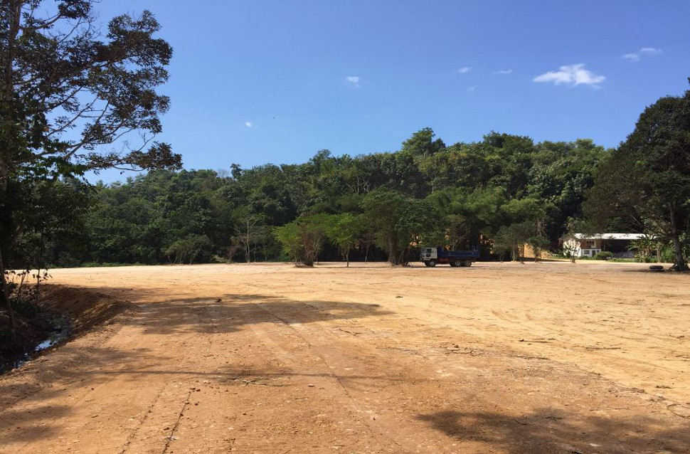
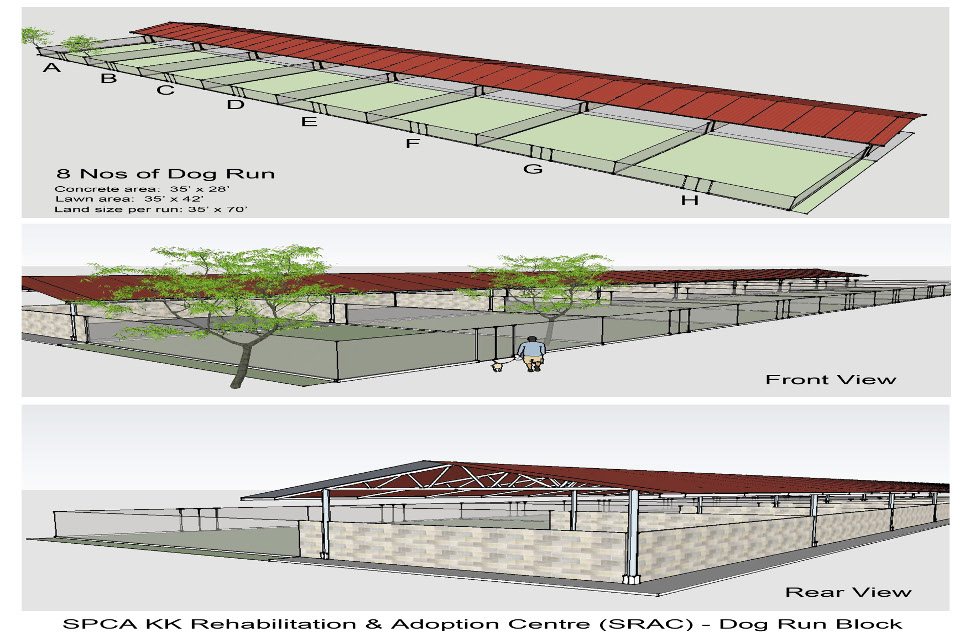

The new shelter is located at Kg.Gana, Papar, about 45 minutes drive from Kota Kinabalu,via the old Papar road.
The master plan for this centre includes the following facilities:
The first phase of this project will be the construction of the 8 dog runs. The total built up area for this phase is 20,000 square feet. The cost of construction inclusive of land reclamation, roofing, concrete flooring and the infrastructure to support this development has been estimated to cost RM440K.
We are now appealing to our supporters to help raise this amount. We are grateful for any amount of donation. All monetary donations to SPCA KK are tax-deductible. (LDHN. 01/35/42/51/179-6.6668).
As a mark of our sincere appreciation of your generosity, we will be very happy (with your consent) to permanently display the names of donors on the walls of our shelter.
We are very confident that your contribution will help to make a big and positive difference to the lives of many animals in need.
We thank you for helping to make this project a reality.
Should you require further information, please contact 016-8805400 / 019-8611732
We look forward to meeting you there. Please help us spread the word!
Thank you
~ End ~